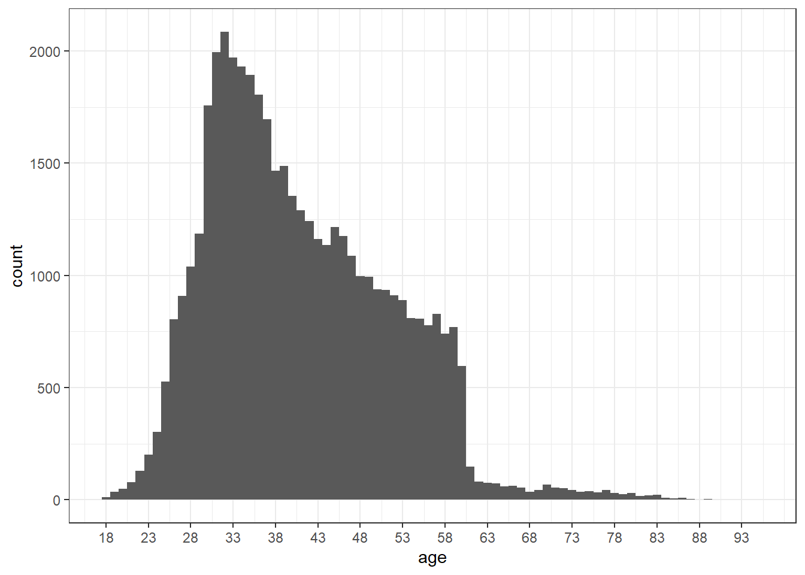
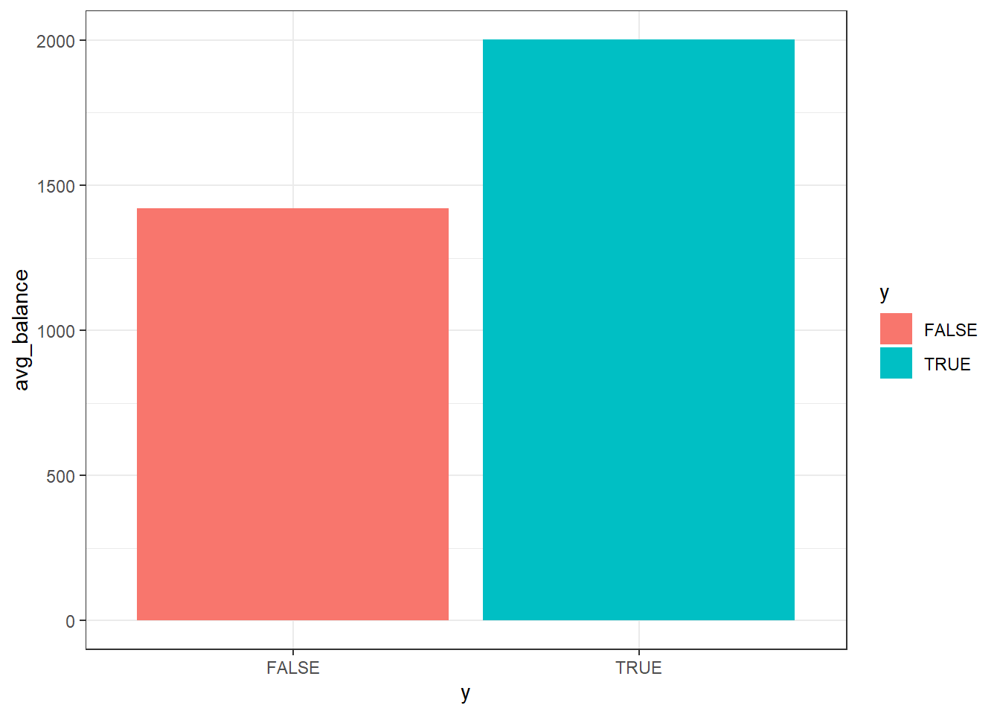
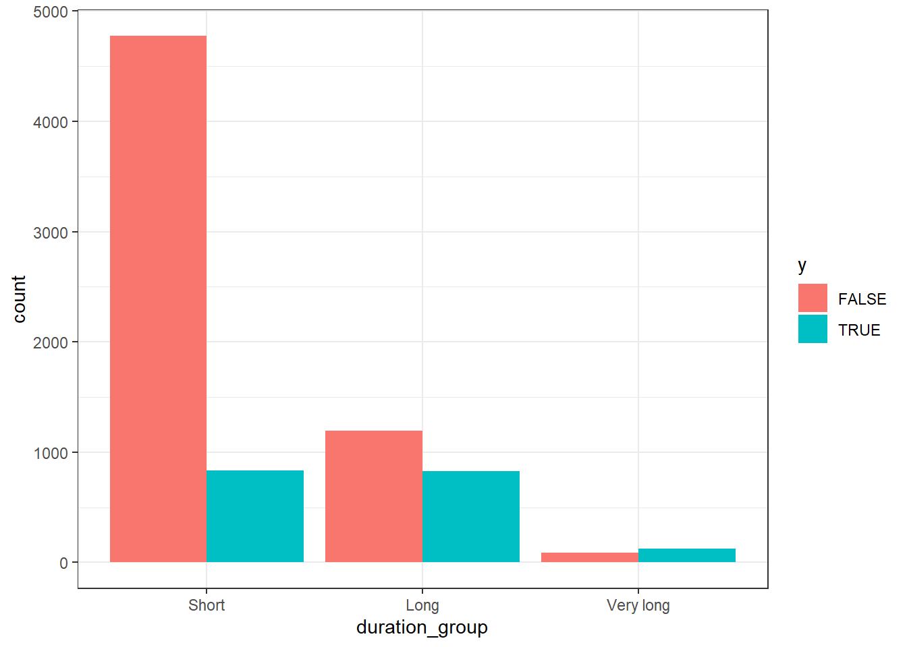
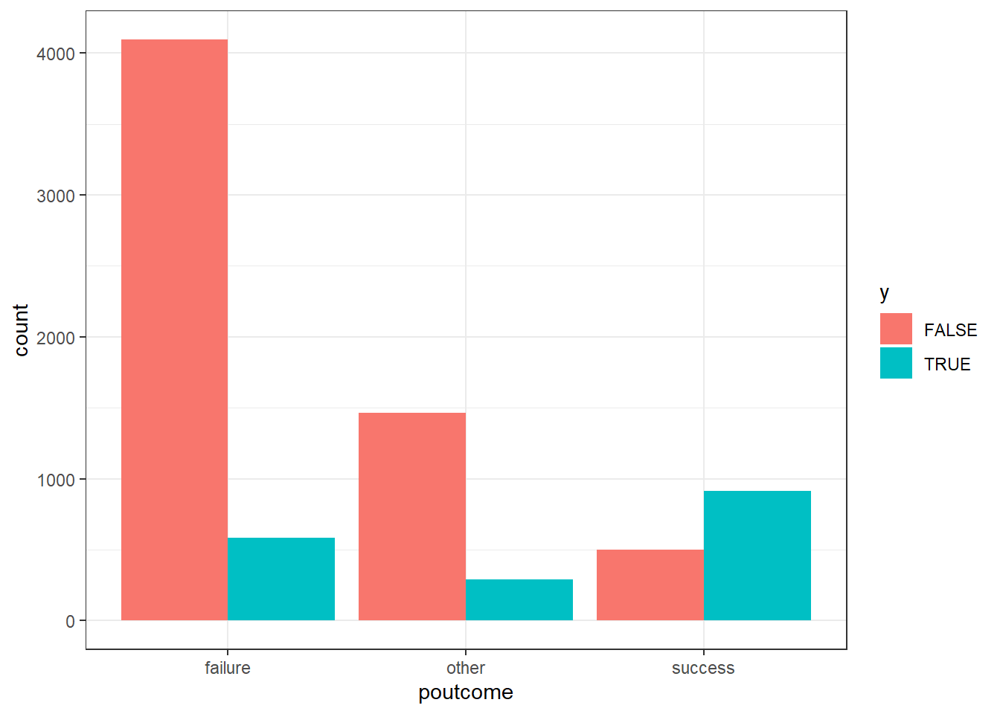
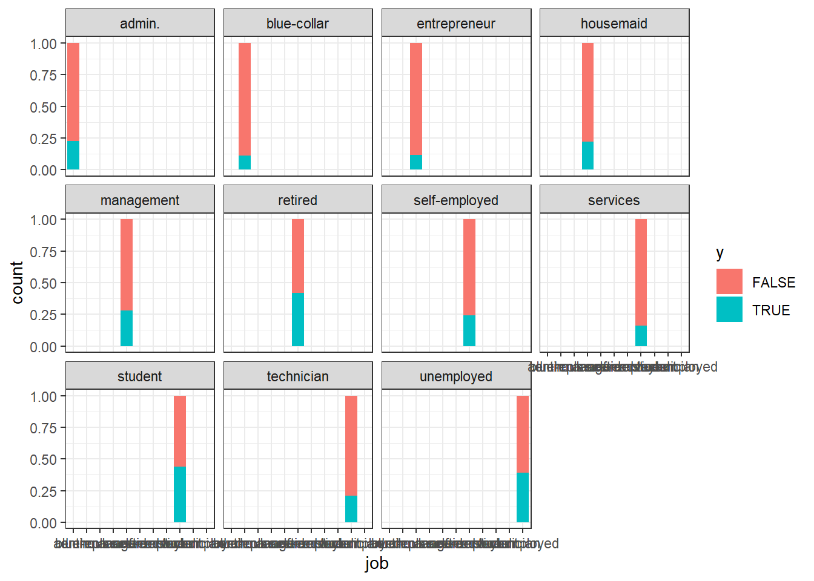
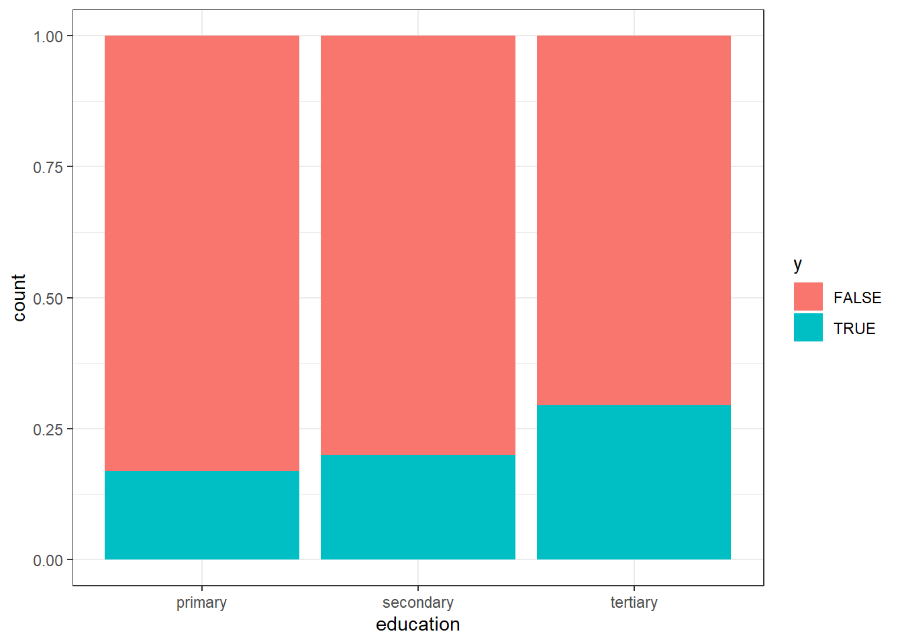
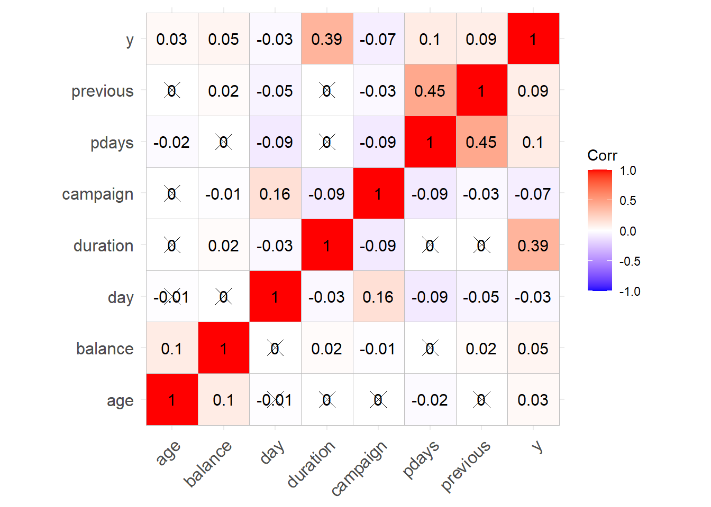
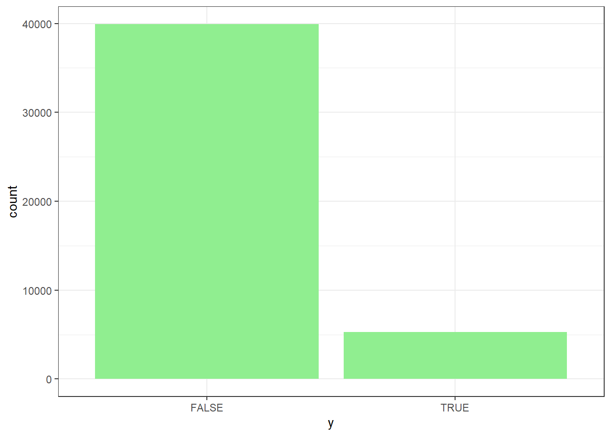
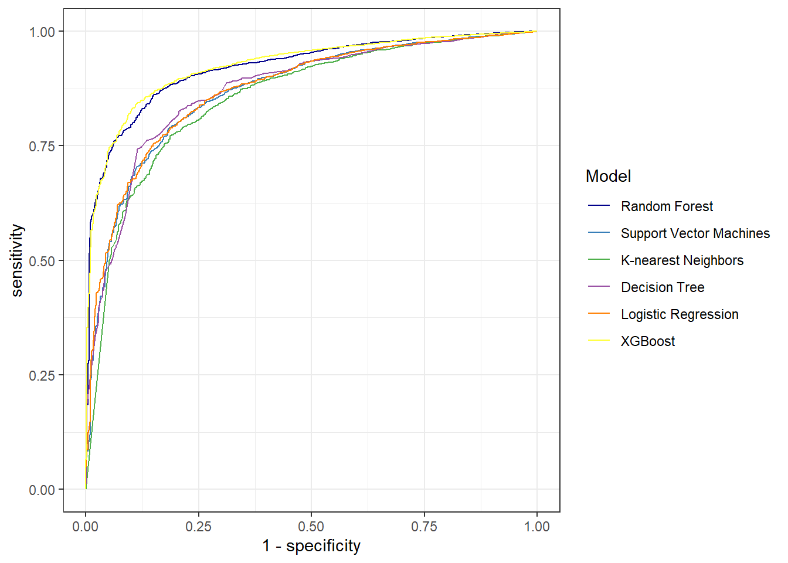

BankDataMain
Distribution of customers’ ages: What is the distribution of customers’ ages? Are there any dominant age groups?
Najwięcej klientów banku jest w wieku 32 lat. Występuje nagły spadek klientów w wieku powyżej 60 lat.
Relationship between age and deposit subscription: Is there a connection between age and subscribing to a deposit? Are certain age groups more inclined towards subscribing?

Istnieje związek pomiędzy wiekiem, a skłonnością do zakładania lokat. Młodzi oraz seniorzy są bardziej skłonni do zakładania lokat w porównaniu do osób w średnim wieku.
Conclusions: There appears to be a correlation between age and subscribing to a deposit. Younger Adults and Seniors show a higher inclination towards subscribing to deposits compared to Middle-Aged and Older Adults.
Annual balance and subscription: Is the average annual balance of clients connected to deposit subscription?

Osoby z większym saldem konta mają większą skłonność do pozostawienia pieniędzy na lokacie.
Contact duration and subscription: Does the duration of the last contact relate to deposit subscription?

Widać, że jest sporo więcej krótszych rozmów, Wydaje się, że istnieje związek pomiędzy czasem trwania ostatniego kontaktu a subskrypcją. Dłuższe kontakty mają zwykle większą liczbę subskrypcji w porównaniu do krótszych kontaktów.
Is there a correlation between outcome of the prevoius campaign and the subscription to a term deposit in the current campaign?

Oznacza to, że wynik poprzedniej kampanii może mieć wpływ na zachowania subskrypcyjne w bieżącej kampanii, co sugeruje związek między tymi zmiennymi.
How does the job status relate to the subscription of a term deposit?

Dane sugerują, że status stanowiska może mieć pewien wpływ na subskrypcję lokaty terminowej, o czym świadczy różna liczba wyników w różnych kategoriach stanowisk. Jednak ta relacja nie jest prosta ani spójna w przypadku wszystkich typów stanowisk, co wskazuje, że inne czynniki mogą również odgrywać rolę w określaniu zachowania subskrypcji.
How does the education level relate to the subscription of a term deposit?

Dane sugerują związek pomiędzy poziomem wykształcenia a abonamentem na lokatę terminową. Wydaje się, że wyższy poziom wykształcenia, zwłaszcza wyższego, wiąże się z większym prawdopodobieństwem zapisania się na lokatę terminową.

Poza czasem trwania rozmowy żadna zmienna numeryczna nie jest istotnie skorelowana z subskrybcją lokaty terminowej (y). Długość rozmowy może być znacząca, dlatego że może świadczyć o większym zainteresowaniu. Im dłużej prowadzona jest rozmowa tym bliższy jest temat konsumentowi przez co jest bardziej chętny do subskrypcji lokaty.

Mamy doczynia z niezbalansowaniem danych. Dużo więcej klientów nie zakłada lokaty w banku.
Budowa modeli
| Metric | Random Forest | SVM | KNN | Decision Tree | Logistic Regression | Boosting |
|---|---|---|---|---|---|---|
| F1 score | 0.9341661 | 0.8862502 | 0.9066597 | 0.9195168 | 0.8838028 | 0.9393864 |
| Accuracy | 0.8863489 | 0.8182014 | 0.8449429 | 0.8634893 | 0.8149666 | 0.8951909 |
| Sensitivity | 0.9430013 | 0.8282472 | 0.8807062 | 0.9119798 | 0.8229508 | 0.9498108 |
| Specificity | 0.5520833 | 0.7589286 | 0.6339286 | 0.5773810 | 0.7678571 | 0.5729167 |
| Recall | 0.9430013 | 0.8282472 | 0.8807062 | 0.9119798 | 0.8229508 | 0.9498108 |
| J index | 0.4950846 | 0.5871757 | 0.5146348 | 0.4893608 | 0.5908080 | 0.5227275 |
